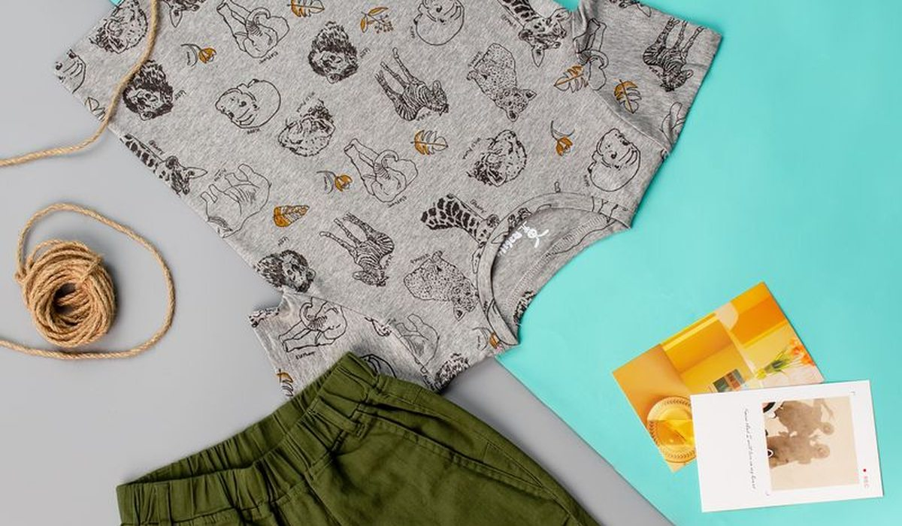
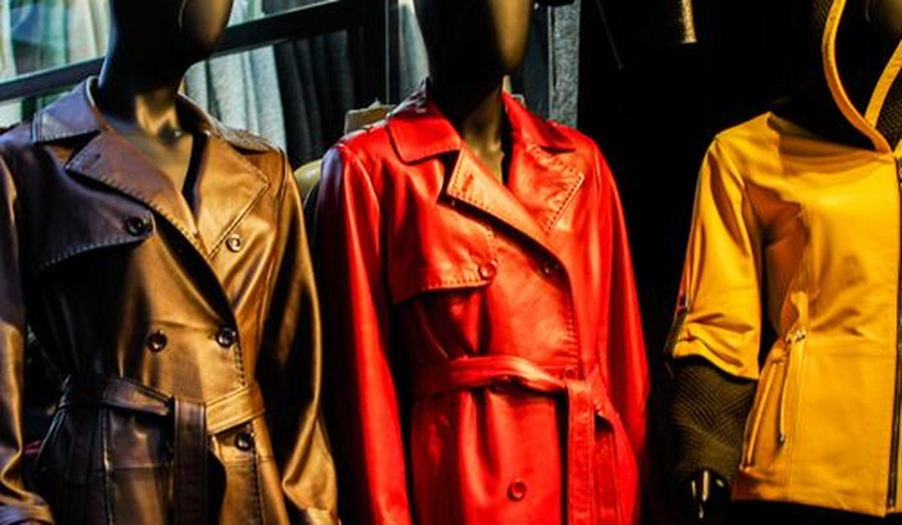

En bref
La meilleure marque de vêtements pour enfant en 2026 est Kiabi, avec une note globale de 8,4/10. Elle cumule les prix catalogue les plus bas du panel, la grille de tailles la plus cohérente et des avis clients solides sur le lavage. H&M arrive deuxième (7,6/10) et reste le meilleur choix sur le bébé, Petit Bateau est la plus solide mais coûte trois fois plus cher.
- Panier complet pour un enfant de 6 ans, de 61 € chez Primark à 214 € chez Petit Bateau
- Kiabi et Vertbaudet sont les deux seules marques dont la grille annoncée reste cohérente d'une collection à l'autre
- 34 % des avis clients Shein mentionnent une décoloration après lavage, contre 4 % chez Petit Bateau
- Le jean est la pièce où l'écart de qualité se voit le plus vite, aux genoux et à la ceinture
Sommaire de ce comparatif
Le classement des marques de vêtements enfant
Nous notons chaque marque sur cinq critères, le prix, la qualité des matières, la fidélité des tailles, la livraison et la note globale pondérée. Sur l'enfant, le prix et les tailles comptent double, parce qu'un enfant change de taille deux fois par an et que personne ne garde un pull trois hivers.
01 Le meilleur rapport qualité-prix72 € le panier, tailles fidèles8,4/10
Le meilleur rapport qualité-prix72 € le panier, tailles fidèles8,4/10
Le meilleur rapport qualité-prix72 € le panier, tailles fidèles8,4/1002 Le meilleur sur le bébéCoton bio, grille complète7,6/10
Le meilleur sur le bébéCoton bio, grille complète7,6/10
Le meilleur sur le bébéCoton bio, grille complète7,6/1003Le moins cher61 € le panier, tenue limitée6,8/10
Kiabi prend la première place pour une raison simple, c'est la seule marque du panel à combiner un panier sous 80 € et des tailles qui correspondent à ce qui est annoncé. H&M reste devant sur le bébé grâce au coton bio sur la majorité des bodies. Petit Bateau garde la meilleure tenue dans le temps, mais son panier atteint 214 €, soit près de trois fois Kiabi.
Le tableau comparatif des 14 marques
Chaque ligne correspond au même panier, un jean, un sweat, deux t-shirts et une paire de chaussettes en taille 6 ans, au prix catalogue relevé sur le site de la marque.
| Marque | Note /10 | Panier 6 ans | Écart de taille | Lavage (avis) | Le point fort |
|---|---|---|---|---|---|
| KiabiNotre choix | 8,4 | 72 € | +0,5 cm | Bonne | Le rapport qualité-prix |
| H&M | 7,6 | 94 € | -1 cm | Bonne | Le choix sur le bébé |
| Vertbaudet | 7,4 | 118 € | 0 cm | Très bonne | Les tailles les plus fiables |
| Petit Bateau | 7,3 | 214 € | +1 cm | Excellente | La durée de vie |
| Zara Kids | 7,0 | 132 € | -2,5 cm | Moyenne | Le style |
| Okaïdi | 6,9 | 126 € | -0,5 cm | Bonne | Les matières naturelles |
| Primark | 6,8 | 61 € | +2 cm | Faible | Le prix |
| Decathlon | 6,7 | 88 € | +1,5 cm | Excellente | Le sport et les manteaux |
| C&A | 6,5 | 79 € | +1 cm | Moyenne | Les basiques |
| Shein | 5,4 | 48 € | Imprévisible | Très faible | Le nombre de références |
Panier 6 ans, cinq pièces équivalentes par marque, prix catalogue relevés hors soldes en septembre 2026. Écart de taille calculé depuis les grilles officielles sur un haut 6 ans.

Trois enseignements ressortent de ce tableau. D'abord, l'écart de prix entre la moins chère et la plus chère atteint un facteur 4,4. Ensuite, le prix ne prédit pas la fidélité des tailles, Primark taille 2 cm trop grand et Zara Kids 2,5 cm trop petit. Enfin, seules quatre marques sur quatorze réunissent moins de 10 % d'avis clients signalant une perte de couleur ou de forme.
Quelle marque taille le plus juste pour un enfant
C'est le premier motif de retour en ligne et la première source d'agacement en magasin. Nous avons repris les grilles de tailles publiées par chaque marque et comparé, pour un même 6 ans, la longueur totale, la largeur de poitrine et la longueur de manche annoncées.
- Kiabi et Vertbaudet sont les plus cohérentes, l'écart entre leurs grilles et la moyenne du panel reste sous le centimètre
- Zara Kids taille petit de 2,5 cm, il faut souvent prendre la taille au-dessus
- Primark et Decathlon taillent grand de 1,5 à 2 cm, pratique pour une année de plus
- Shein est imprévisible, les avis clients signalent jusqu'à 4 cm d'écart entre deux articles de la même taille annoncée
Sur un enfant de 6 ans, 2,5 cm de longueur de haut représentent une demi-taille commerciale. C'est la différence entre un vêtement qui tient un an et un vêtement qui tient six mois.
Combien coûte d'habiller un enfant pour l'année
Nous avons additionné les prix catalogue d'un vestiaire complet pour un enfant de 6 ans, soit vingt-deux pièces, de la tenue d'école au manteau d'hiver, chez les cinq marques les plus accessibles.
| Marque | Vestiaire complet | Coût par mois | Pièces sous 10 € |
|---|---|---|---|
| Primark | 238 € | 19,80 € | 14 |
| Shein | 251 € | 20,90 € | 16 |
| Kiabi | 286 € | 23,80 € | 11 |
| C&A | 324 € | 27,00 € | 7 |
| H&M | 371 € | 30,90 € | 5 |
Vestiaire de 22 pièces pour un enfant de 6 ans, prix catalogue relevés hors soldes en septembre 2026.

Primark et Shein remportent la bataille du prix affiché, mais les avis clients changent le calcul. Sur les pièces portées plusieurs fois par semaine, 31 % des avis Shein et 19 % des avis Primark signalent un remplacement dans l'année, contre 6 % chez Kiabi. Le vestiaire le moins cher à l'achat n'est donc pas le moins cher à l'usage.
Kiabi, H&M ou Zara Kids, comment choisir
Si votre priorité est le budget
Kiabi, sans hésitation. Le panier à 72 € est le meilleur compromis du panel et la grille de tailles est la plus large, du prématuré au 14 ans.
Si votre priorité est le bébé
H&M. Les bodies sont en coton bio sur la majorité de la gamme, les avis clients sur la tenue des pressions sont les meilleurs du panel et la gamme naissance est la plus complète avec Vertbaudet.
Si votre priorité est la durée de vie
Petit Bateau, à condition d'acheter en soldes ou en seconde main. C'est la marque qui réunit le moins d'avis négatifs sur le lavage, et ses pièces se transmettent entre frères et sœurs, ce qui divise le coût réel par deux ou trois.
Si votre priorité est le style
Zara Kids, en prenant systématiquement une taille au-dessus. Les coupes suivent les collections adultes, mais la tenue au lavage reste moyenne et les prix ont augmenté de 9 % sur un an dans notre relevé.
Notre verdict
Sur nos relevés 2026, Kiabi est la meilleure marque de vêtements pour enfant avec 8,4/10. Elle gagne sur le prix, sur la cohérence des tailles et sur la largeur de la grille, et ne perd que sur la durée de vie face à Petit Bateau.
Si votre enfant est un bébé, prenez H&M. Si vous cherchez des pièces qui se transmettent, prenez Petit Bateau en soldes. Si le budget commande, Primark reste imbattable à l'achat, mais prévoyez de racheter en cours d'année.
Questions fréquentes
Quelle est la meilleure marque de vêtements pour enfant en 2026 ?
Kiabi obtient la meilleure note globale de notre comparatif 2026 avec 8,4/10, grâce aux prix catalogue les plus bas du panel, à la grille de tailles la plus cohérente et à des avis clients solides sur le lavage. H&M suit avec 7,6/10 et reste devant sur le bébé.
Quelle marque de vêtements enfant taille le plus grand ?
D'après les grilles officielles, Primark annonce environ 2 cm de plus que la moyenne du panel sur un haut 6 ans et Decathlon 1,5 cm. Zara Kids annonce 2,5 cm de moins. Kiabi et Vertbaudet sont les plus proches de la moyenne.
Quelle marque enfant résiste le mieux au lavage ?
Petit Bateau et Decathlon réunissent moins de 5 % d'avis clients signalant une perte de couleur ou de forme. À l'opposé, 34 % des avis Shein mentionnent une décoloration et les t-shirts Primark sont souvent cités pour un col qui se déforme.
Combien coûte d'habiller un enfant de 6 ans pour l'année ?
Pour un vestiaire complet de 22 pièces, comptez 238 € chez Primark, 286 € chez Kiabi et 371 € chez H&M en prix catalogue hors soldes. En tenant compte des remplacements signalés par les avis clients, Kiabi devient le moins cher à l'usage.
Où acheter des vêtements enfant pas chers de bonne qualité ?
Kiabi offre le meilleur compromis entre prix et qualité de notre panel, avec un panier à 72 € pour cinq pièces. Primark est moins cher à l'affichage mais concentre davantage d'avis signalant un remplacement dans l'année.
Comment sont notées les marques de ce comparatif ?
Chaque marque est notée sur cinq critères, le prix catalogue, la qualité annoncée des matières, la cohérence des tailles, la livraison et une note globale pondérée. Les prix viennent des sites officiels, les écarts de taille des grilles publiées par les marques et la tenue au lavage des avis clients vérifiés. Aucune marque ne finance ce comparatif.
Notre méthode
Ce comparatif repose sur des données publiques, vérifiables une par une.
- Les prix sont relevés sur les sites officiels des marques, hors code promo et hors soldes
- Les écarts de taille proviennent des grilles officielles publiées par les marques, comparées entre elles
- La tenue au lavage est établie à partir des avis clients vérifiés qui mentionnent rétrécissement ou décoloration
- Les compositions et les grammages sont ceux affichés sur les fiches produit
- Aucune marque ne finance ce comparatif, ne nous rémunère ni ne le relit avant publication